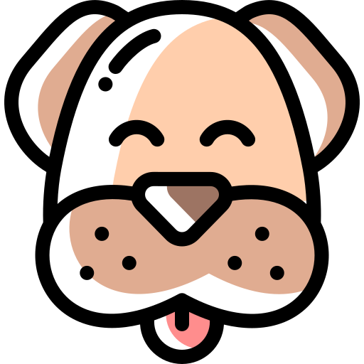
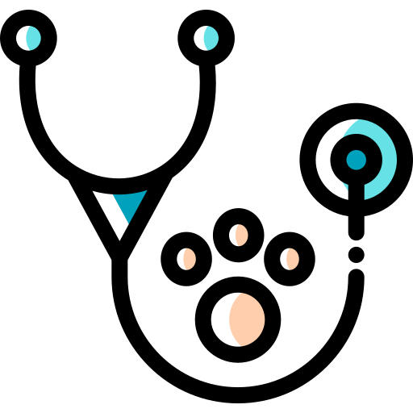
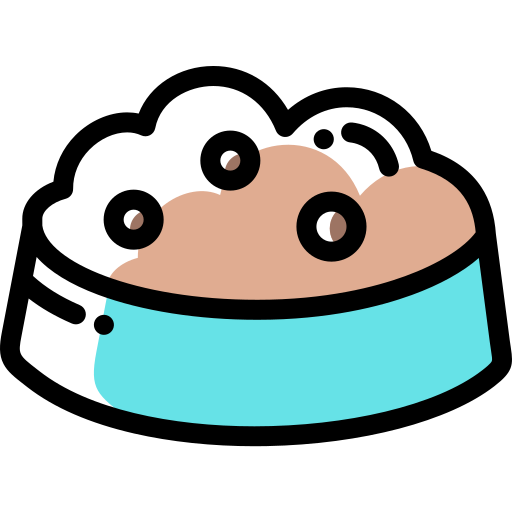
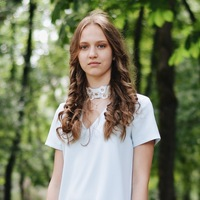

Blog about pug
November 24th, 2018
Description
Health Problems
Health Problems
Description
The Pug is a small, stocky, square, thickset dog. The round head is massive with a short, blunt, square-shaped muzzle. Moles on the cheeks are considered beauty spots. The teeth meet in a slight undershot bite. The very large, prominent eyes are dark. The small, thin ears are either rose or button shaped. The face has large, deep wrinkles. The high-set tail is curled over the back and a double curl is preferred in the show ring. Dewclaws are usually removed. The short coat is soft, fine and smooth. Coat colors come in apricot, fawn, black and silver.
Health Problems
Pugs catch colds easily and are stressed by hot and cold weather. They are prone to allergies and the short muzzle contributes to chronic breathing problems, making the Pug tend to wheeze and snore. (Pugs suffer from poor ventilation.) Prone to skin problems. Prone to mast cell tumors. Prone to Pug Dog Encephalitis (PDE), an inflammation of the brain that strikes adolescent Pugs usually between the ages of 2 and 3. The cause is unknown. They are not the easiest whelpers. Dams usually have to have cesarean sections due to the size of the pups’ heads. There is a chance of Keratitis (inflammation of the cornea) and ulcers on the cornea. Eyes are prone to weeping and cherry eye. Do not overfeed a Pug, as they will eat more than is good for them, quickly becoming obese and living much shorter lives.
Health Problems
The Pug should do well on a high-quality dog food, whether commercially manufactured or home-prepared with your veterinarian’s supervision and approval. Any diet should be appropriate to the dog’s age (puppy, adult, or senior). Pugs live to eat and are prone to obesity, so watch your dog’s calorie consumption and weight level. , so watch your dog’s calorie consumption and weight level. Treats can be an important aid in training, but giving too many can cause obesity. Learn about which human foods are safe for dogs, and which are not. Check with your vet if you have any concerns about your dog’s weight or diet. Clean, fresh water should be available at all times.

Viktoryia Miakshyna